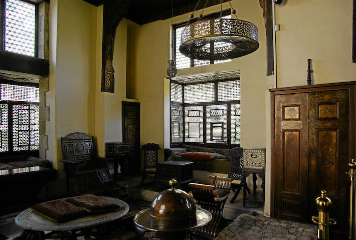
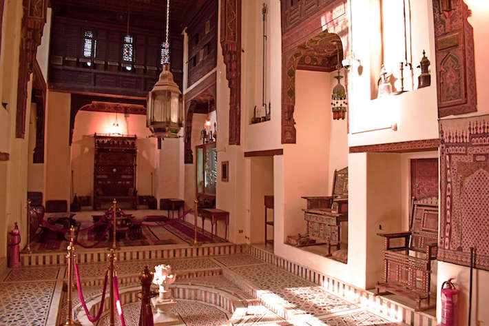

Gayer Andreson Museum

The Gayer Anderson Museum is best described as being an art museum. Located in Cairo’s Sayyida Zeinab neighborhood,
the museum is named after a man by the name of Major R.G. Gayer-Anderson who lived in the building from 1932 to 1942,
after being given full permission to do so from the then Egyptian government.

While the building was already home to numerous treasured artifacts,
Gayer-Anderson also contributed many which he had personally collected during his time in Egypt.
Today, Gayer Anderson Museum have delightful collection of artifacts, including fine carpets, various furnishings, a very impressive art collection and more.
One of the wonderful things about this particular museum is that it is not only the contents of the museum which attract people,
but also the building itself.
It is in fact considered to be one of the very best remaining examples of 17th-century Muslim architecture in Cairo, and especial domestic Muslim architecture from that period.
Address-Ahmed Abn Toloun, Toloun, El-Sayeda Zainab,Cairo. |
Opening Hours-From 9:00 am To 16:00 pm |
Ticket PricesRegular:- 35 pound, Students:- 20 pound |
Phone02 23647822 |
Location
|
The Coptic Museum
 The Museum’s founder wished to bring together all the material necessary to study Christian history in Egypt.
Thanks to his enthusiasm for Coptic antiquity, he succeeded in his project to create this Museum which links Pharaonic,
Greco-Roman and Islamic antiquity.
The Museum is located within the walls of the fortress of Babylon,
part of the old city walls built by Emperor Trajan in 98 A.D., which also houses the old churches of Cairo: St. Sergius and St. Barbara of the 4th century
The Museum’s founder wished to bring together all the material necessary to study Christian history in Egypt.
Thanks to his enthusiasm for Coptic antiquity, he succeeded in his project to create this Museum which links Pharaonic,
Greco-Roman and Islamic antiquity.
The Museum is located within the walls of the fortress of Babylon,
part of the old city walls built by Emperor Trajan in 98 A.D., which also houses the old churches of Cairo: St. Sergius and St. Barbara of the 4th century
 and the Hanging Church “El Muallaqa” of the 6th century.
The Museum holds a collection of 16,000 works of art,
of which 1,200 real treasures are exhibited to the public. It owns 6,000 papyrus manuscripts of which the most important are the Psalms of David and the manuscripts of Nag Hammadi.
and the Hanging Church “El Muallaqa” of the 6th century.
The Museum holds a collection of 16,000 works of art,
of which 1,200 real treasures are exhibited to the public. It owns 6,000 papyrus manuscripts of which the most important are the Psalms of David and the manuscripts of Nag Hammadi.
Address-3 Mari Gerges, Kom Ghorab, Old Cairo, Cairo Governorate |
Opening Hours-From 9:00 am To 16:00 pm |
Ticket PricesRegular:- 50 pound, Students:- 25 pound |
Phone0223628766 |
Location |